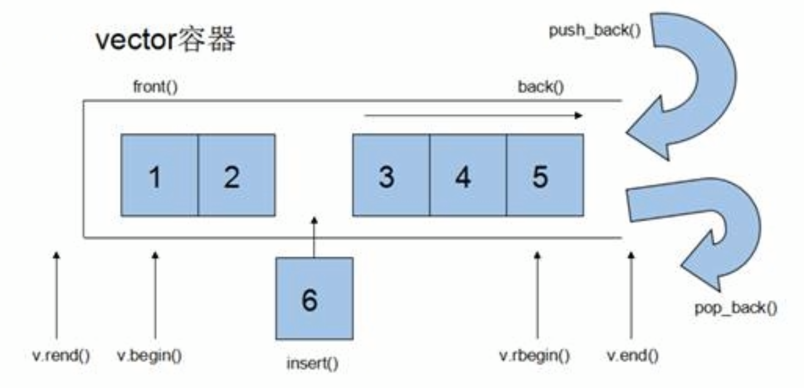
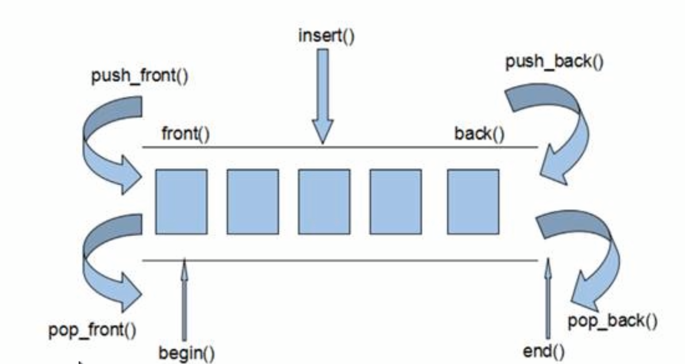
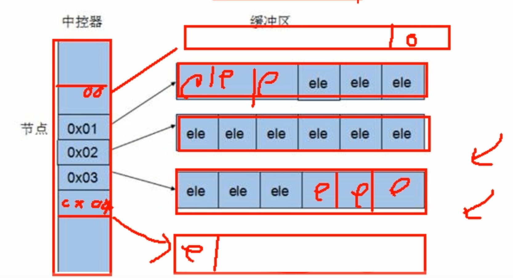
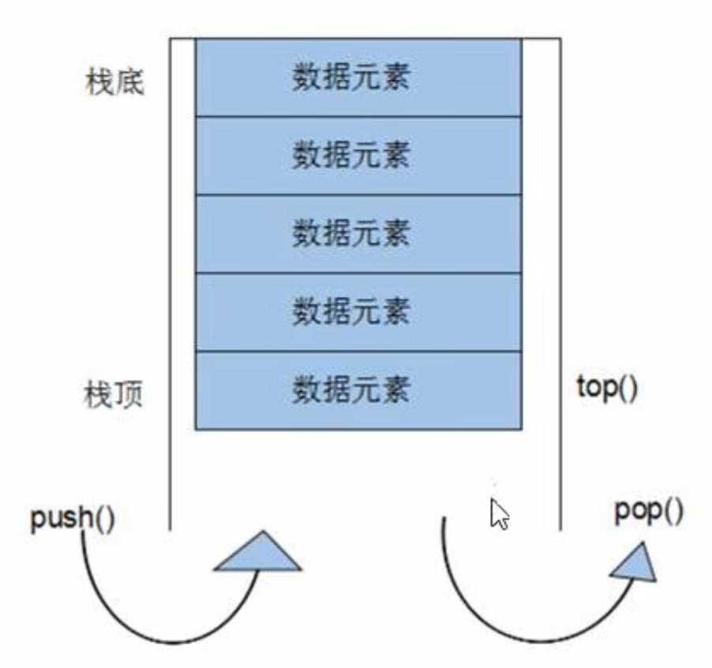
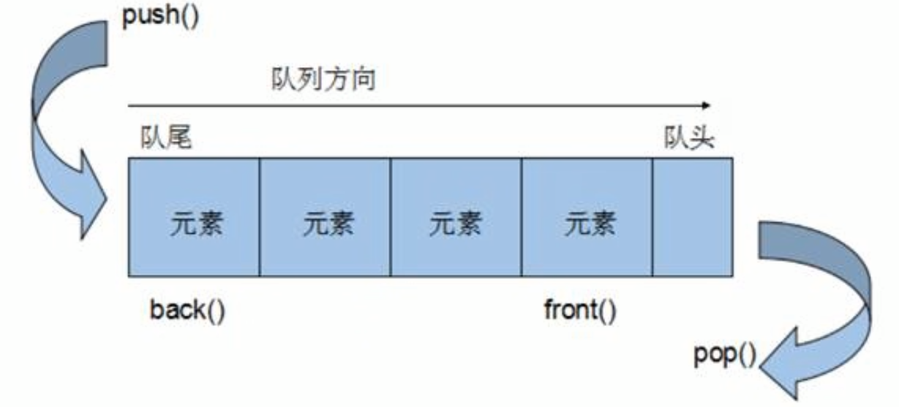
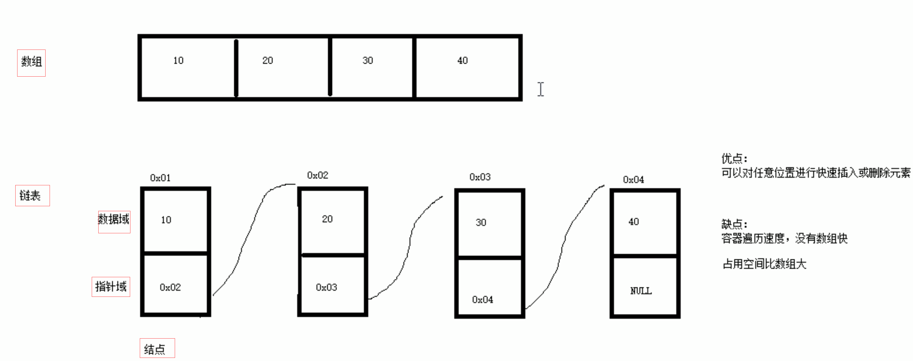
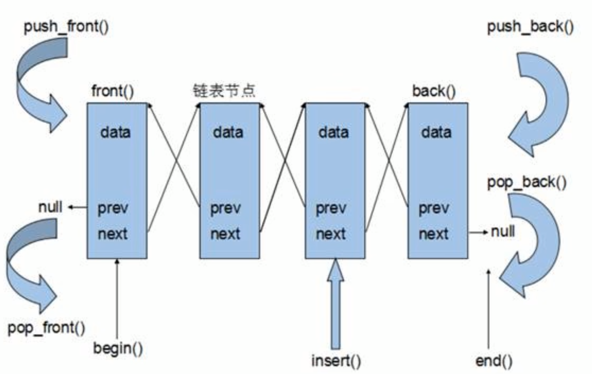

STL- 常用容器 1 string容器 1.1 string基本概念 本质：
string是C++风格的字符串，而string本质上是一个类
string和char * 区别：
char * 是一个指针string是一个类，类内部封装了char*，管理这个字符串，是一个 char*型的容器 。
特点：
string 类内部封装了很多成员方法
例如：查找find，拷贝copy，删除delete 替换replace，插入insert
string管理char*所分配的内存，不用担心复制越界和取值越界等，由类内部进行负责
1.2 string构造函数 构造函数原型：
string(); //创建一个空的字符串 例如: string str;string(const char* s); //使用字符串s初始化string(const string& str); //使用一个string对象初始化另一个string对象string(int n, char c); //使用n个字符c初始化
示例：
1 2 3 4 5 6 7 8 9 10 11 12 13 14 15 16 17 18 19 20 21 22 23 24 25 26 27 #include <string> void test01 () string s1; cout << "str1 = " << s1 << endl; const char * str = "hello world" ; string s2 (str) ; cout << "str2 = " << s2 << endl; string s3 (s2) ; cout << "str3 = " << s3 << endl; string s4 (10 , 'a' ) ; cout << "str3 = " << s3 << endl; } int main () test01 (); system ("pause" ); return 0 ; }
1 2 3 4 5 str1 = str2 = hello world str3 = hello world str3 = hello world 请按任意键继续. . .
总结：string的多种构造方式没有可比性，灵活使用即可
1.3 string赋值操作 功能描述：
赋值的函数原型：
string& operator=(const char* s); //char*类型字符串 赋值给当前的字符串string& operator=(const string &s); //把字符串s赋给当前的字符串string& operator=(char c); //字符赋值给当前的字符串string& assign(const char *s); //把字符串s赋给当前的字符串string& assign(const char *s, int n); //把字符串s的前n个字符赋给当前的字符串string& assign(const string &s); //把字符串s赋给当前字符串string& assign(int n, char c); //用n个字符c赋给当前字符串
示例：
1 2 3 4 5 6 7 8 9 10 11 12 13 14 15 16 17 18 19 20 21 22 23 24 25 26 27 28 29 30 31 32 33 34 35 36 37 38 39 40 41 void test01 () string str1; str1 = "hello world" ; cout << "str1 = " << str1 << endl; string str2; str2 = str1; cout << "str2 = " << str2 << endl; string str3; str3 = 'a' ; cout << "str3 = " << str3 << endl; string str4; str4.assign ("hello c++" ); cout << "str4 = " << str4 << endl; string str5; str5.assign ("hello c++" ,5 ); cout << "str5 = " << str5 << endl; string str6; str6.assign (str5); cout << "str6 = " << str6 << endl; string str7; str7.assign (5 , 'x' ); cout << "str7 = " << str7 << endl; } int main () test01 (); system ("pause" ); return 0 ; }
1 2 3 4 5 6 7 8 str1 = hello world str2 = hello world str3 = a str4 = hello c++ str5 = hello str6 = hello str7 = xxxxx 请按任意键继续. . .
总结：
string的赋值方式很多，operator= 这种方式是比较实用的
1.4 string字符串拼接 功能描述：
函数原型：
string& operator+=(const char* str); //重载+=操作符string& operator+=(const char c); //重载+=操作符string& operator+=(const string& str); //重载+=操作符string& append(const char *s); //把字符串s连接到当前字符串结尾string& append(const char *s, int n); //把字符串s的前n个字符连接到当前字符串结尾string& append(const string &s); //同operator+=(const string& str)string& append(const string &s, int pos, int n);//字符串s中从pos开始的n个字符连接到字符串结尾
示例：
1 2 3 4 5 6 7 8 9 10 11 12 13 14 15 16 17 18 19 20 21 22 23 24 25 26 27 28 29 30 31 32 33 34 void test01 () string str1 = "我" ; str1 += "爱玩游戏" ; cout << "str1 = " << str1 << endl; str1 += ':' ; cout << "str1 = " << str1 << endl; string str2 = "LOL DNF" ; str1 += str2; cout << "str1 = " << str1 << endl; string str3 = "I" ; str3.append (" love " ); str3.append ("game abcde" , 4 ); str3.append (str2, 4 , 3 ); cout << "str3 = " << str3 << endl; } int main () test01 (); system ("pause" ); return 0 ; }
1 2 3 4 5 str1 = 我爱玩游戏 str1 = 我爱玩游戏: str1 = 我爱玩游戏:LOL DNF str3 = I love gameDNF 请按任意键继续. . .
总结：字符串拼接的重载版本很多，初学阶段记住几种即可
1.5 string查找和替换 功能描述：
查找：查找指定字符串是否存在
替换：在指定的位置替换字符串
函数原型：
int find(const string& str, int pos = 0) const; //查找str第一次出现位置,从pos开始查找int find(const char* s, int pos = 0) const; //查找s第一次出现位置,从pos开始查找int find(const char* s, int pos, int n) const; //从pos位置查找s的前n个字符第一次位置int find(const char c, int pos = 0) const; //查找字符c第一次出现位置int rfind(const string& str, int pos = npos) const; //查找str最后一次位置,从pos开始查找int rfind(const char* s, int pos = npos) const; //查找s最后一次出现位置,从pos开始查找int rfind(const char* s, int pos, int n) const; //从pos查找s的前n个字符最后一次位置int rfind(const char c, int pos = 0) const; //查找字符c最后一次出现位置string& replace(int pos, int n, const string& str); //替换从pos开始n个字符为字符串strstring& replace(int pos, int n,const char* s); //替换从pos开始的n个字符为字符串s
示例：
1 2 3 4 5 6 7 8 9 10 11 12 13 14 15 16 17 18 19 20 21 22 23 24 25 26 27 28 29 30 31 32 33 34 35 36 37 38 39 40 41 42 void test01 () string str1 = "abcdefgde" ; int pos = str1.find ("de" ); if (pos == -1 ) { cout << "未找到" << endl; } else { cout << "pos = " << pos << endl; } pos = str1.rfind ("de" ); cout << "pos = " << pos << endl; } void test02 () string str1 = "abcdefgde" ; str1.replace (1 , 3 , "1111" ); cout << "str1 = " << str1 << endl; } int main () test02 (); system ("pause" ); return 0 ; }
总结：
find查找是从左往后，rfind从右往左
find找到字符串后返回查找的第一个字符位置，找不到返回-1
replace在替换时，要指定从哪个位置起，多少个字符，替换成什么样的字符串
1.6 string字符串比较 功能描述：
比较方式：
= 返回 0
> 返回 1
< 返回 -1
函数原型：
int compare(const string &s) const; //与字符串s比较int compare(const char *s) const; //与字符串s比较
示例：
1 2 3 4 5 6 7 8 9 10 11 12 13 14 15 16 17 18 19 20 21 22 23 24 25 26 27 28 29 30 31 void test01 () string s1 = "hello" ; string s2 = "aello" ; int ret = s1.compare (s2); if (ret == 0 ) { cout << "s1 等于 s2" << endl; } else if (ret > 0 ) { cout << "s1 大于 s2" << endl; } else { cout << "s1 小于 s2" << endl; } } int main () test01 (); system ("pause" ); return 0 ; }
总结：字符串对比主要是用于比较两个字符串是否相等，判断谁大谁小的意义并不是很大
1.7 string字符存取和修改 string中单个字符存取方式有两种
char& operator[](int n); //通过[]方式取字符char& at(int n); //通过at方法获取字符
示例：
1 2 3 4 5 6 7 8 9 10 11 12 13 14 15 16 17 18 19 20 21 22 23 24 25 26 27 28 29 30 31 32 void test01 () string str = "hello world" ; for (int i = 0 ; i < str.size (); i++) { cout << str[i] << " " ; } cout << endl; for (int i = 0 ; i < str.size (); i++) { cout << str.at (i) << " " ; } cout << endl; str[0 ] = 'x' ; str.at (1 ) = 'x' ; cout << str << endl; } int main () test01 (); system ("pause" ); return 0 ; }
总结：string字符串中单个字符存取有两种方式，利用 [ ] 或 at
1.8 string插入和删除 功能描述：
函数原型：
string& insert(int pos, const char* s); //插入字符串string& insert(int pos, const string& str); //插入字符串string& insert(int pos, int n, char c); //在指定位置插入n个字符cstring& erase(int pos, int n = npos); //删除从Pos开始的n个字符
示例：
1 2 3 4 5 6 7 8 9 10 11 12 13 14 15 16 17 18 19 void test01 () string str = "hello" ; str.insert (1 , "111" ); cout << str << endl; str.erase (1 , 3 ); cout << str << endl; } int main () test01 (); system ("pause" ); return 0 ; }
总结： 插入和删除的起始下标都是从0开始
1.9 string子串 功能描述：
函数原型：
string substr(int pos = 0, int n = npos) const; //返回由pos开始的n个字符组成的字符串
示例：
1 2 3 4 5 6 7 8 9 10 11 12 13 14 15 16 17 18 19 20 21 22 23 void test01 () string str = "abcdefg" ; string subStr = str.substr (1 , 3 ); cout << "subStr = " << subStr << endl; string email = "hello@sina.com" ; int pos = email.find ("@" ); string username = email.substr (0 , pos); cout << "username: " << username << endl; } int main () test01 (); system ("pause" ); return 0 ; }
1 2 subStr = bcd username: hello
总结： 灵活的运用求子串功能，可以在实际开发中获取有效的信息
2 vector容器 2.1 vector基本概念 功能：
vector数据结构和数组非常相似 ，也称为单端数组
vector与普通数组区别：
不同之处在于数组是静态空间，而vector可以动态扩展
动态扩展：
并不是在原空间之后续接新空间，而是找更大的内存空间，然后将原数据拷贝新空间，释放原空间

3.2.2 vector构造函数 功能描述：
函数原型：
vector<T> v; //采用模板实现类实现，默认构造函数vector(v.begin(), v.end()); //将v[begin(), end())区间中的元素拷贝给本身。vector(n, elem); //构造函数将n个elem拷贝给本身。vector(const vector &vec); //拷贝构造函数。
示例：
1 2 3 4 5 6 7 8 9 10 11 12 13 14 15 16 17 18 19 20 21 22 23 24 25 26 27 28 29 30 31 32 33 34 35 36 37 #include <vector> void printVector (vector<int >& v) for (vector<int >::iterator it = v.begin (); it != v.end (); it++) { cout << *it << " " ; } cout << endl; } void test01 () vector<int > v1; for (int i = 0 ; i < 10 ; i++) { v1.push_back (i); } printVector (v1); vector<int > v2 (v1.begin(), v1.end()) ; printVector (v2); vector<int > v3 (10 , 100 ) ; printVector (v3); vector<int > v4 (v3) ; printVector (v4); } int main () test01 (); system ("pause" ); return 0 ; }
1 2 3 4 0 1 2 3 4 5 6 7 8 9 0 1 2 3 4 5 6 7 8 9 100 100 100 100 100 100 100 100 100 100 100 100 100 100 100 100 100 100 100 100
总结： vector的多种构造方式没有可比性，灵活使用即可
2.3 vector赋值操作 功能描述：
函数原型：
vector& operator=(const vector &vec);//重载等号操作符assign(beg, end); //将[beg, end)区间中的数据拷贝赋值给本身。assign(n, elem); //将n个elem拷贝赋值给本身。
示例：
1 2 3 4 5 6 7 8 9 10 11 12 13 14 15 16 17 18 19 20 21 22 23 24 25 26 27 28 29 30 31 32 33 34 35 36 37 38 39 40 41 #include <vector> void printVector (vector<int >& v) for (vector<int >::iterator it = v.begin (); it != v.end (); it++) { cout << *it << " " ; } cout << endl; } void test01 () vector<int > v1; for (int i = 0 ; i < 10 ; i++) { v1.push_back (i); } printVector (v1); vector<int >v2; v2 = v1; printVector (v2); vector<int >v3; v3.assign (v1.begin (), v1.end ()); printVector (v3); vector<int >v4; v4.assign (10 , 100 ); printVector (v4); } int main () test01 (); system ("pause" ); return 0 ; }
1 2 3 4 0 1 2 3 4 5 6 7 8 9 0 1 2 3 4 5 6 7 8 9 0 1 2 3 4 5 6 7 8 9 100 100 100 100 100 100 100 100 100 100
总结： vector赋值方式比较简单，使用operator=，或者assign都可以
2.4 vector容量和大小 功能描述：
函数原型：
empty(); //判断容器是否为空
capacity(); //容器的容量
size(); //返回容器中元素的个数
resize(int num); //重新指定容器的长度为num，若容器变长，则以默认值填充新位置。
//如果容器变短，则末尾超出容器长度的元素被删除。
resize(int num, elem); //重新指定容器的长度为num，若容器变长，则以elem值填充新位置。
//如果容器变短，则末尾超出容器长度的元素被删除
示例：
1 2 3 4 5 6 7 8 9 10 11 12 13 14 15 16 17 18 19 20 21 22 23 24 25 26 27 28 29 30 31 32 33 34 35 36 37 38 39 40 41 42 43 44 45 46 #include <vector> void printVector (vector<int >& v) for (vector<int >::iterator it = v.begin (); it != v.end (); it++) { cout << *it << " " ; } cout << endl; } void test01 () vector<int > v1; for (int i = 0 ; i < 10 ; i++) { v1.push_back (i); } printVector (v1); if (v1.empty ()) { cout << "v1为空" << endl; } else { cout << "v1不为空" << endl; cout << "v1的容量 = " << v1.capacity () << endl; cout << "v1的大小 = " << v1.size () << endl; } v1.resize (15 ,10 ); printVector (v1); v1.resize (5 ); printVector (v1); } int main () test01 (); system ("pause" ); return 0 ; }
1 2 3 4 5 6 0 1 2 3 4 5 6 7 8 9 v1不为空 v1的容量 = 13 v1的大小 = 10 0 1 2 3 4 5 6 7 8 9 10 10 10 10 10 0 1 2 3 4
总结：
判断是否为空 — empty
返回元素个数 — size
返回容器容量 — capacity
重新指定大小 — resize
2.5 vector插入和删除 功能描述：
函数原型：
push_back(ele); //尾部插入元素elepop_back(); //删除最后一个元素insert(const_iterator pos, ele); //迭代器指向位置pos插入元素eleinsert(const_iterator pos, int count,ele);//迭代器指向位置pos插入count个元素eleerase(const_iterator pos); //删除迭代器指向的元素erase(const_iterator start, const_iterator end);//删除迭代器从start到end之间的元素clear(); //删除容器中所有元素
示例：
1 2 3 4 5 6 7 8 9 10 11 12 13 14 15 16 17 18 19 20 21 22 23 24 25 26 27 28 29 30 31 32 33 34 35 36 37 38 39 40 41 42 43 44 45 46 47 48 49 #include <vector> void printVector (vector<int >& v) for (vector<int >::iterator it = v.begin (); it != v.end (); it++) { cout << *it << " " ; } cout << endl; } void test01 () vector<int > v1; v1.push_back (10 ); v1.push_back (20 ); v1.push_back (30 ); v1.push_back (40 ); v1.push_back (50 ); printVector (v1); v1.pop_back (); printVector (v1); v1.insert (v1.begin (), 100 ); printVector (v1); v1.insert (v1.begin (), 2 , 1000 ); printVector (v1); v1.erase (v1.begin ()); printVector (v1); v1.erase (v1.begin (), v1.end ()); v1.clear (); printVector (v1); } int main () test01 (); system ("pause" ); return 0 ; }
1 2 3 4 5 10 20 30 40 50 10 20 30 40 100 10 20 30 40 1000 1000 100 10 20 30 40 1000 100 10 20 30 40
总结：
尾插 — push_back
尾删 — pop_back
插入 — insert (位置迭代器)
删除 — erase （位置迭代器）
清空 — clear
2.6 vector数据存取 功能描述：
函数原型：
at(int idx); //返回索引idx所指的数据operator[]; //返回索引idx所指的数据front(); //返回容器中第一个数据元素back(); //返回容器中最后一个数据元素
示例：
1 2 3 4 5 6 7 8 9 10 11 12 13 14 15 16 17 18 19 20 21 22 23 24 25 26 27 28 29 30 31 32 33 34 #include <vector> void test01 () vector<int >v1; for (int i = 0 ; i < 10 ; i++) { v1.push_back (i); } for (int i = 0 ; i < v1.size (); i++) { cout << v1[i] << " " ; } cout << endl; for (int i = 0 ; i < v1.size (); i++) { cout << v1.at (i) << " " ; } cout << endl; cout << "v1的第一个元素为： " << v1.front () << endl; cout << "v1的最后一个元素为： " << v1.back () << endl; } int main () test01 (); system ("pause" ); return 0 ; }
1 2 3 4 0 1 2 3 4 5 6 7 8 9 0 1 2 3 4 5 6 7 8 9 v1的第一个元素为： 0 v1的最后一个元素为： 9
总结：
除了用迭代器获取vector容器中元素，[ ]和at也可以
front返回容器第一个元素
back返回容器最后一个元素
2.7 vector互换容器 功能描述：
函数原型：
swap(vec); // 将vec与本身的元素互换
示例：
1 2 3 4 5 6 7 8 9 10 11 12 13 14 15 16 17 18 19 20 21 22 23 24 25 26 27 28 29 30 31 32 33 34 35 36 37 38 39 40 41 42 43 44 45 46 47 48 49 50 51 52 53 54 55 56 57 58 59 60 61 62 63 64 65 #include <vector> void printVector (vector<int >& v) for (vector<int >::iterator it = v.begin (); it != v.end (); it++) { cout << *it << " " ; } cout << endl; } void test01 () vector<int >v1; for (int i = 0 ; i < 10 ; i++) { v1.push_back (i); } printVector (v1); vector<int >v2; for (int i = 10 ; i > 0 ; i--) { v2.push_back (i); } printVector (v2); cout << "互换后" << endl; v1.swap (v2); printVector (v1); printVector (v2); } void test02 () vector<int > v; for (int i = 0 ; i < 100000 ; i++) { v.push_back (i); } cout << "v的容量为：" << v.capacity () << endl; cout << "v的大小为：" << v.size () << endl; v.resize (3 ); cout << "v的容量为：" << v.capacity () << endl; cout << "v的大小为：" << v.size () << endl; vector <int >(v).swap (v); cout << "v的容量为：" << v.capacity () << endl; cout << "v的大小为：" << v.size () << endl; } int main () test01 (); test02 (); system ("pause" ); return 0 ; }
1 2 3 4 5 6 7 8 9 10 11 0 1 2 3 4 5 6 7 8 9 10 9 8 7 6 5 4 3 2 1 互换后 10 9 8 7 6 5 4 3 2 1 0 1 2 3 4 5 6 7 8 9 v的容量为：138255 v的大小为：100000 v的容量为：138255 v的大小为：3 v的容量为：3 v的大小为：3
总结：swap可以使两个容器互换，可以达到实用的收缩内存效果
2.8 vector预留空间 功能描述：
函数原型：
reserve(int len);//容器预留len个元素长度，预留位置不初始化，元素不可访问。
示例：
1 2 3 4 5 6 7 8 9 10 11 12 13 14 15 16 17 18 19 20 21 22 23 24 25 26 27 28 29 30 31 32 33 34 35 36 37 38 39 40 41 42 43 44 45 46 47 48 49 #include <vector> void test01 () vector<int > v; int num = 0 ; int * p = NULL ; for (int i = 0 ; i < 100000 ; i++) { v.push_back (i); if (p != &v[0 ]) { p = &v[0 ]; num++; } } cout << "num1:" << num << endl; } void test02 () vector<int > v; v.reserve (100000 ); int num = 0 ; int * p = NULL ; for (int i = 0 ; i < 100000 ; i++) { v.push_back (i); if (p != &v[0 ]) { p = &v[0 ]; num++; } } cout << "num2:" << num << endl; } int main () test01 (); test02 (); system ("pause" ); return 0 ; }
总结：如果数据量较大，可以一开始利用reserve预留空间
3 deque容器 3.1 deque容器基本概念 功能：
deque与vector区别：
vector对于头部的插入删除效率低，数据量越大，效率越低
deque相对而言，对头部的插入删除速度回比vector快
vector访问元素时的速度会比deque快,这和两者内部实现有关

deque内部工作原理:
deque内部有个中控器 ，维护每段缓冲区中的内容，缓冲区中存放真实数据
中控器维护的是每个缓冲区的地址，使得使用deque时像一片连续的内存空间

3.2 deque构造函数 功能描述：
函数原型：
deque<T> deqT; //默认构造形式deque(beg, end); //构造函数将[beg, end)区间中的元素拷贝给本身。deque(n, elem); //构造函数将n个elem拷贝给本身。deque(const deque &deq); //拷贝构造函数
示例：
1 2 3 4 5 6 7 8 9 10 11 12 13 14 15 16 17 18 19 20 21 22 23 24 25 26 27 28 29 30 31 32 33 34 35 36 37 38 #include <deque> void printDeque (const deque<int >& d) for (deque<int >::const_iterator it = d.begin (); it != d.end (); it++) { cout << *it << " " ; } cout << endl; } void test01 () deque<int > d1; for (int i = 0 ; i < 10 ; i++) { d1.push_back (i); } printDeque (d1); deque<int > d2 (d1.begin(),d1.end()) ; printDeque (d2); deque<int >d3 (10 ,100 ); printDeque (d3); deque<int >d4 = d3; printDeque (d4); } int main () test01 (); system ("pause" ); return 0 ; }
1 2 3 4 0 1 2 3 4 5 6 7 8 9 0 1 2 3 4 5 6 7 8 9 100 100 100 100 100 100 100 100 100 100 100 100 100 100 100 100 100 100 100 100
总结： deque容器和vector容器的构造方式几乎一致，灵活使用即可
3.3 deque赋值操作 功能描述：
函数原型：
deque& operator=(const deque &deq); //重载等号操作符assign(beg, end); //将[beg, end)区间中的数据拷贝赋值给本身。assign(n, elem); //将n个elem拷贝赋值给本身。
示例：
1 2 3 4 5 6 7 8 9 10 11 12 13 14 15 16 17 18 19 20 21 22 23 24 25 26 27 28 29 30 31 32 33 34 35 36 37 38 39 40 41 42 #include <deque> void printDeque (const deque<int >& d) for (deque<int >::const_iterator it = d.begin (); it != d.end (); it++) { cout << *it << " " ; } cout << endl; } void test01 () deque<int > d1; for (int i = 0 ; i < 10 ; i++) { d1.push_back (i); } printDeque (d1); deque<int >d2; d2 = d1; printDeque (d2); deque<int >d3; d3.assign (d1.begin (), d1.end ()); printDeque (d3); deque<int >d4; d4.assign (10 , 100 ); printDeque (d4); } int main () test01 (); system ("pause" ); return 0 ; }
总结：deque赋值操作也与vector相同，需熟练掌握
3.4 deque大小操作 功能描述：
函数原型：
deque.empty(); //判断容器是否为空
deque.size(); //返回容器中元素的个数
deque.resize(num); //重新指定容器的长度为num,若容器变长，则以默认值填充新位置。
//如果容器变短，则末尾超出容器长度的元素被删除。
deque.resize(num, elem); //重新指定容器的长度为num,若容器变长，则以elem值填充新位置。
//如果容器变短，则末尾超出容器长度的元素被删除。
示例：
1 2 3 4 5 6 7 8 9 10 11 12 13 14 15 16 17 18 19 20 21 22 23 24 25 26 27 28 29 30 31 32 33 34 35 36 37 38 39 40 41 42 43 44 45 46 47 #include <deque> void printDeque (const deque<int >& d) for (deque<int >::const_iterator it = d.begin (); it != d.end (); it++) { cout << *it << " " ; } cout << endl; } void test01 () deque<int > d1; for (int i = 0 ; i < 10 ; i++) { d1.push_back (i); } printDeque (d1); if (d1.empty ()) { cout << "d1为空!" << endl; } else { cout << "d1不为空!" << endl; cout << "d1的大小为：" << d1.size () << endl; } d1.resize (15 , 1 ); printDeque (d1); d1.resize (5 ); printDeque (d1); } int main () test01 (); system ("pause" ); return 0 ; }
1 2 3 4 5 0 1 2 3 4 5 6 7 8 9 d1不为空! d1的大小为：10 0 1 2 3 4 5 6 7 8 9 1 1 1 1 1 0 1 2 3 4
总结：
deque没有容量的概念
判断是否为空 — empty
返回元素个数 — size
重新指定个数 — resize
3.5 deque 插入和删除 功能描述：
函数原型：
两端插入操作：
push_back(elem); //在容器尾部添加一个数据push_front(elem); //在容器头部插入一个数据pop_back(); //删除容器最后一个数据pop_front(); //删除容器第一个数据
指定位置操作：
insert(pos,elem); //在pos位置插入一个elem元素的拷贝，返回新数据的位置。
insert(pos,n,elem); //在pos位置插入n个elem数据，无返回值。
insert(pos,beg,end); //在pos位置插入[beg,end)区间的数据，无返回值。
clear(); //清空容器的所有数据
erase(beg,end); //删除[beg,end)区间的数据，返回下一个数据的位置。
erase(pos); //删除pos位置的数据，返回下一个数据的位置。
示例：
1 2 3 4 5 6 7 8 9 10 11 12 13 14 15 16 17 18 19 20 21 22 23 24 25 26 27 28 29 30 31 32 33 34 35 36 37 38 39 40 41 42 43 44 45 46 47 48 49 50 51 52 53 54 55 56 57 58 59 60 61 62 63 64 65 66 67 68 69 70 71 72 73 74 75 76 77 78 79 80 81 82 83 84 85 86 #include <deque> void printDeque (const deque<int >& d) for (deque<int >::const_iterator it = d.begin (); it != d.end (); it++) { cout << *it << " " ; } cout << endl; } void test01 () deque<int > d; d.push_back (10 ); d.push_back (20 ); d.push_front (100 ); d.push_front (200 ); printDeque (d); d.pop_back (); d.pop_front (); printDeque (d); } void test02 () deque<int > d; d.push_back (10 ); d.push_back (20 ); d.push_front (100 ); d.push_front (200 ); printDeque (d); d.insert (d.begin (), 1000 ); printDeque (d); d.insert (d.begin (), 2 ,10000 ); printDeque (d); deque<int >d2; d2.push_back (1 ); d2.push_back (2 ); d2.push_back (3 ); d.insert (d.begin (), d2.begin (), d2.end ()); printDeque (d); } void test03 () deque<int > d; d.push_back (10 ); d.push_back (20 ); d.push_front (100 ); d.push_front (200 ); printDeque (d); d.erase (d.begin ()); printDeque (d); d.erase (d.begin (), d.end ()); d.clear (); printDeque (d); } int main () test01 (); test02 (); test03 (); system ("pause" ); return 0 ; }
1 2 3 4 5 6 7 8 200 100 10 20 100 10 200 100 10 20 1000 200 100 10 20 10000 10000 1000 200 100 10 20 1 2 3 10000 10000 1000 200 100 10 20 200 100 10 20 100 10 20
总结：
插入和删除提供的位置是迭代器！
尾插 — push_back
尾删 — pop_back
头插 — push_front
头删 — pop_front
3.6 deque 数据存取 功能描述：
函数原型：
at(int idx); //返回索引idx所指的数据operator[]; //返回索引idx所指的数据front(); //返回容器中第一个数据元素back(); //返回容器中最后一个数据元素
示例：
1 2 3 4 5 6 7 8 9 10 11 12 13 14 15 16 17 18 19 20 21 22 23 24 25 26 27 28 29 30 31 32 33 34 35 36 37 38 39 40 41 42 43 44 45 46 #include <deque> void printDeque (const deque<int >& d) for (deque<int >::const_iterator it = d.begin (); it != d.end (); it++) { cout << *it << " " ; } cout << endl; } void test01 () deque<int > d; d.push_back (10 ); d.push_back (20 ); d.push_front (100 ); d.push_front (200 ); for (int i = 0 ; i < d.size (); i++) { cout << d[i] << " " ; } cout << endl; for (int i = 0 ; i < d.size (); i++) { cout << d.at (i) << " " ; } cout << endl; cout << "front:" << d.front () << endl; cout << "back:" << d.back () << endl; } int main () test01 (); system ("pause" ); return 0 ; }
总结：
除了用迭代器获取deque容器中元素，[ ]和at也可以
front返回容器第一个元素
back返回容器最后一个元素
3.7 deque 排序 功能描述：
算法：
sort(iterator beg, iterator end) //对beg和end区间内元素进行排序
示例：
1 2 3 4 5 6 7 8 9 10 11 12 13 14 15 16 17 18 19 20 21 22 23 24 25 26 27 28 29 30 31 32 33 34 35 36 37 38 39 #include <deque> #include <algorithm> void printDeque (const deque<int >& d) for (deque<int >::const_iterator it = d.begin (); it != d.end (); it++) { cout << *it << " " ; } cout << endl; } void test01 () deque<int > d; d.push_back (10 ); d.push_back (20 ); d.push_front (100 ); d.push_front (200 ); printDeque (d); sort (d.begin (), d.end ()); printDeque (d); } int main () test01 (); system ("pause" ); return 0 ; }
总结：sort算法非常实用，使用时包含头文件 algorithm即可
4 案例-评委打分 4.1 案例描述 有5名选手：选手ABCDE，10个评委分别对每一名选手打分，去除最高分，去除评委中最低分，取平均分。
4.2 实现步骤
创建五名选手，放到vector中
遍历vector容器，取出来每一个选手，执行for循环，可以把10个评分打分存到deque容器中
sort算法对deque容器中分数排序，去除最高和最低分
deque容器遍历一遍，累加总分
获取平均分
示例代码：
1 2 3 4 5 6 7 8 9 10 11 12 13 14 15 16 17 18 19 20 21 22 23 24 25 26 27 28 29 30 31 32 33 34 35 36 37 38 39 40 41 42 43 44 45 46 47 48 49 50 51 52 53 54 55 56 57 58 59 60 61 62 63 64 65 66 67 68 69 70 71 72 73 74 75 76 77 78 79 80 81 82 83 84 85 86 87 88 89 90 91 92 93 94 95 96 97 98 99 100 101 102 103 104 105 106 class Person { public : Person (string name, int score) { this ->m_Name = name; this ->m_Score = score; } string m_Name; int m_Score; }; void createPerson (vector<Person>&v) string nameSeed = "ABCDE" ; for (int i = 0 ; i < 5 ; i++) { string name = "选手" ; name += nameSeed[i]; int score = 0 ; Person p (name, score) ; v.push_back (p); } } void setScore (vector<Person>&v) for (vector<Person>::iterator it = v.begin (); it != v.end (); it++) { deque<int >d; for (int i = 0 ; i < 10 ; i++) { int score = rand () % 41 + 60 ; d.push_back (score); } sort (d.begin (), d.end ()); d.pop_back (); d.pop_front (); int sum = 0 ; for (deque<int >::iterator dit = d.begin (); dit != d.end (); dit++) { sum += *dit; } int avg = sum / d.size (); it->m_Score = avg; } } void showScore (vector<Person>&v) for (vector<Person>::iterator it = v.begin (); it != v.end (); it++) { cout << "姓名： " << it->m_Name << " 平均分： " << it->m_Score << endl; } } int main () srand ((unsigned int )time (NULL )); vector<Person>v; createPerson (v); setScore (v); showScore (v); system ("pause" ); return 0 ; }
总结： 选取不同的容器操作数据，可以提升代码的效率
5 stack容器 5.1 stack 基本概念 概念：stack是一种先进后出 (First In Last Out,FILO)的数据结构，它只有一个出口

栈中只有顶端的元素才可以被外界使用，因此栈不允许有遍历行为
栈中进入数据称为 — 入栈 push
栈中弹出数据称为 — 出栈 pop
5.2 stack 常用接口 功能描述：栈容器常用的对外接口
构造函数：
stack<T> stk; //stack采用模板类实现， stack对象的默认构造形式stack(const stack &stk); //拷贝构造函数
赋值操作：
stack& operator=(const stack &stk); //重载等号操作符
数据存取：
push(elem); //向栈顶添加元素pop(); //从栈顶移除第一个元素top(); //返回栈顶元素
大小操作：
empty(); //判断堆栈是否为空size(); //返回栈的大小
示例：
1 2 3 4 5 6 7 8 9 10 11 12 13 14 15 16 17 18 19 20 21 22 23 24 25 26 27 28 29 30 31 #include <stack> void test01 () stack<int > s; s.push (10 ); s.push (20 ); s.push (30 ); while (!s.empty ()) { cout << "栈顶元素为： " << s.top () << endl; s.pop (); } cout << "栈的大小为：" << s.size () << endl; } int main () test01 (); system ("pause" ); return 0 ; }
1 2 3 4 栈顶元素为： 30 栈顶元素为： 20 栈顶元素为： 10 栈的大小为：0
总结：
入栈 — push
出栈 — pop
返回栈顶 — top
判断栈是否为空 — empty
返回栈大小 — size
6 queue 容器 6.1 queue 基本概念 概念：Queue是一种 先进先出**(First In First Out,FIFO)的数据结构，它有两个出口

队列容器允许从一端新增元素，从另一端移除元素
队列中只有队头和队尾才可以被外界使用，因此队列不允许有遍历行为
队列中进数据称为 — 入队 push
队列中出数据称为 — 出队 pop
6.2 queue 常用接口 功能描述：栈容器常用的对外接口
构造函数：
queue<T> que; //queue采用模板类实现，queue对象的默认构造形式queue(const queue &que); //拷贝构造函数
赋值操作：
queue& operator=(const queue &que); //重载等号操作符
数据存取：
push(elem); //往队尾添加元素pop(); //从队头移除第一个元素back(); //返回最后一个元素front(); //返回第一个元素
大小操作：
empty(); //判断堆栈是否为空size(); //返回栈的大小
示例：
1 2 3 4 5 6 7 8 9 10 11 12 13 14 15 16 17 18 19 20 21 22 23 24 25 26 27 28 29 30 31 32 33 34 35 36 37 38 39 40 41 42 43 44 45 46 47 48 49 50 51 52 53 54 55 56 57 #include <queue> #include <string> class Person { public : Person (string name, int age) { this ->m_Name = name; this ->m_Age = age; } string m_Name; int m_Age; }; void test01 () queue<Person> q; Person p1 ("唐僧" , 30 ) ; Person p2 ("孙悟空" , 1000 ) ; Person p3 ("猪八戒" , 900 ) ; Person p4 ("沙僧" , 800 ) ; q.push (p1); q.push (p2); q.push (p3); q.push (p4); while (!q.empty ()) { cout << "队头元素-- 姓名： " << q.front ().m_Name << " 年龄： " << q.front ().m_Age << endl; cout << "队尾元素-- 姓名： " << q.back ().m_Name << " 年龄： " << q.back ().m_Age << endl; cout << endl; q.pop (); } cout << "队列大小为：" << q.size () << endl; } int main () test01 (); system ("pause" ); return 0 ; }
1 2 3 4 5 6 7 8 9 10 11 12 13 队头元素-- 姓名： 唐僧 年龄： 30 队尾元素-- 姓名： 沙僧 年龄： 800 队头元素-- 姓名： 孙悟空 年龄： 1000 队尾元素-- 姓名： 沙僧 年龄： 800 队头元素-- 姓名： 猪八戒 年龄： 900 队尾元素-- 姓名： 沙僧 年龄： 800 队头元素-- 姓名： 沙僧 年龄： 800 队尾元素-- 姓名： 沙僧 年龄： 800 队列大小为：0
总结：
入队 — push
出队 — pop
返回队头元素 — front
返回队尾元素 — back
判断队是否为空 — empty
返回队列大小 — size
7 list容器 7.1 list基本概念 功能： 将数据进行链式存储
链表 （list）是一种物理存储单元上非连续的存储结构，数据元素的逻辑顺序是通过链表中的指针链接实现的
链表的组成：链表由一系列结点 组成
结点的组成：一个是存储数据元素的数据域 ，另一个是存储下一个结点地址的指针域

STL中的链表是一个双向循环链表

由于链表的存储方式并不是连续的内存空间，因此链表list中的迭代器只支持前移和后移，属于双向迭代器
list的优点：
采用动态存储分配，不会造成内存浪费和溢出
链表执行插入和删除操作十分方便，修改指针即可，不需要移动大量元素
list的缺点：
链表灵活，但是空间(指针域) 和 时间（遍历）额外耗费较大
List有一个重要的性质，插入操作和删除操作都不会造成原有list迭代器的失效，这在vector是不成立的。
总结：STL中List和vector是两个最常被使用的容器 ，各有优缺点
7.2 list构造函数 功能描述：
函数原型：
list<T> lst; //list采用采用模板类实现,对象的默认构造形式：list(beg,end); //构造函数将[beg, end)区间中的元素拷贝给本身。list(n,elem); //构造函数将n个elem拷贝给本身。list(const list &lst); //拷贝构造函数。
示例：
1 2 3 4 5 6 7 8 9 10 11 12 13 14 15 16 17 18 19 20 21 22 23 24 25 26 27 28 29 30 31 32 33 34 35 36 37 38 #include <list> void printList (const list<int >& L) for (list<int >::const_iterator it = L.begin (); it != L.end (); it++) { cout << *it << " " ; } cout << endl; } void test01 () list<int >L1; L1.push_back (10 ); L1.push_back (20 ); L1.push_back (30 ); L1.push_back (40 ); printList (L1); list<int >L2 (L1.begin (),L1.end ()); printList (L2); list<int >L3 (L2); printList (L3); list<int >L4 (10 , 1000 ); printList (L4); } int main () test01 (); system ("pause" ); return 0 ; }
总结：list构造方式同其他几个STL常用容器，熟练掌握即可
7.3 list 赋值和交换 功能描述：
函数原型：
assign(beg, end); //将[beg, end)区间中的数据拷贝赋值给本身。assign(n, elem); //将n个elem拷贝赋值给本身。list& operator=(const list &lst); //重载等号操作符swap(lst); //将lst与本身的元素互换。
示例：
1 2 3 4 5 6 7 8 9 10 11 12 13 14 15 16 17 18 19 20 21 22 23 24 25 26 27 28 29 30 31 32 33 34 35 36 37 38 39 40 41 42 43 44 45 46 47 48 49 50 51 52 53 54 55 56 57 58 59 60 61 62 63 64 65 66 67 68 69 70 71 72 #include <list> void printList (const list<int >& L) for (list<int >::const_iterator it = L.begin (); it != L.end (); it++) { cout << *it << " " ; } cout << endl; } void test01 () list<int >L1; L1.push_back (10 ); L1.push_back (20 ); L1.push_back (30 ); L1.push_back (40 ); printList (L1); list<int >L2; L2 = L1; printList (L2); list<int >L3; L3.assign (L2.begin (), L2.end ()); printList (L3); list<int >L4; L4.assign (10 , 100 ); printList (L4); } void test02 () list<int >L1; L1.push_back (10 ); L1.push_back (20 ); L1.push_back (30 ); L1.push_back (40 ); list<int >L2; L2.assign (10 , 100 ); cout << "交换前： " << endl; printList (L1); printList (L2); cout << endl; L1.swap (L2); cout << "交换后： " << endl; printList (L1); printList (L2); } int main () test02 (); system ("pause" ); return 0 ; }
总结：list赋值和交换操作能够灵活运用即可
7.4 list 大小操作 功能描述：
函数原型：
size(); //返回容器中元素的个数
empty(); //判断容器是否为空
resize(num); //重新指定容器的长度为num，若容器变长，则以默认值填充新位置。
//如果容器变短，则末尾超出容器长度的元素被删除。
resize(num, elem); //重新指定容器的长度为num，若容器变长，则以elem值填充新位置。
//如果容器变短，则末尾超出容器长度的元素被删除。
示例：
1 2 3 4 5 6 7 8 9 10 11 12 13 14 15 16 17 18 19 20 21 22 23 24 25 26 27 28 29 30 31 32 33 34 35 36 37 38 39 40 41 42 43 44 45 #include <list> void printList (const list<int >& L) for (list<int >::const_iterator it = L.begin (); it != L.end (); it++) { cout << *it << " " ; } cout << endl; } void test01 () list<int >L1; L1.push_back (10 ); L1.push_back (20 ); L1.push_back (30 ); L1.push_back (40 ); if (L1.empty ()) { cout << "L1为空" << endl; } else { cout << "L1不为空" << endl; cout << "L1的大小为： " << L1.size () << endl; } L1.resize (10 ); printList (L1); L1.resize (2 ); printList (L1); } int main () test01 (); system ("pause" ); return 0 ; }
总结：
判断是否为空 — empty
返回元素个数 — size
重新指定个数 — resize
7.5 list 插入和删除 功能描述：
函数原型：
push_back(elem);//在容器尾部加入一个元素
pop_back();//删除容器中最后一个元素
push_front(elem);//在容器开头插入一个元素
pop_front();//从容器开头移除第一个元素
insert(pos,elem);//在pos位置插elem元素的拷贝，返回新数据的位置。
insert(pos,n,elem);//在pos位置插入n个elem数据，无返回值。
insert(pos,beg,end);//在pos位置插入[beg,end)区间的数据，无返回值。
clear();//移除容器的所有数据
erase(beg,end);//删除[beg,end)区间的数据，返回下一个数据的位置。
erase(pos);//删除pos位置的数据，返回下一个数据的位置。
remove(elem);//删除容器中所有与elem值匹配的元素。
示例：
1 2 3 4 5 6 7 8 9 10 11 12 13 14 15 16 17 18 19 20 21 22 23 24 25 26 27 28 29 30 31 32 33 34 35 36 37 38 39 40 41 42 43 44 45 46 47 48 49 50 51 52 53 54 55 56 57 58 59 60 61 62 63 64 #include <list> void printList (const list<int >& L) for (list<int >::const_iterator it = L.begin (); it != L.end (); it++) { cout << *it << " " ; } cout << endl; } void test01 () list<int > L; L.push_back (10 ); L.push_back (20 ); L.push_back (30 ); L.push_front (100 ); L.push_front (200 ); L.push_front (300 ); printList (L); L.pop_back (); printList (L); L.pop_front (); printList (L); list<int >::iterator it = L.begin (); L.insert (++it, 1000 ); printList (L); it = L.begin (); L.erase (++it); printList (L); L.push_back (10000 ); L.push_back (10000 ); L.push_back (10000 ); printList (L); L.remove (10000 ); printList (L); L.clear (); printList (L); } int main () test01 (); system ("pause" ); return 0 ; }
1 2 3 4 5 6 7 300 200 100 10 20 30 300 200 100 10 20 200 100 10 20 200 1000 100 10 20 200 100 10 20 200 100 10 20 10000 10000 10000 200 100 10 20
总结：
尾插 — push_back
尾删 — pop_back
头插 — push_front
头删 — pop_front
插入 — insert
删除 — erase
移除 — remove
清空 — clear
7.6 list 数据存取 功能描述：
函数原型：
front(); //返回第一个元素。back(); //返回最后一个元素。
示例：
1 2 3 4 5 6 7 8 9 10 11 12 13 14 15 16 17 18 19 20 21 22 23 24 25 26 27 28 29 30 31 32 #include <list> void test01 () list<int >L1; L1.push_back (10 ); L1.push_back (20 ); L1.push_back (30 ); L1.push_back (40 ); cout << "第一个元素为： " << L1.front () << endl; cout << "最后一个元素为： " << L1.back () << endl; list<int >::iterator it = L1.begin (); it++; it--; } int main () test01 (); system ("pause" ); return 0 ; }
总结：
list容器中不可以通过[]或者at方式访问数据
返回第一个元素 — front
返回最后一个元素 — back
7.7 list 反转和排序 功能描述：
函数原型：
reverse(); //反转链表sort(); //链表排序
示例：
1 2 3 4 5 6 7 8 9 10 11 12 13 14 15 16 17 18 19 20 21 22 23 24 25 26 27 28 29 30 31 32 33 34 35 36 37 38 39 40 41 42 43 void printList (const list<int >& L) for (list<int >::const_iterator it = L.begin (); it != L.end (); it++) { cout << *it << " " ; } cout << endl; } bool myCompare (int val1 , int val2) return val1 > val2; } void test01 () list<int > L; L.push_back (90 ); L.push_back (30 ); L.push_back (20 ); L.push_back (70 ); printList (L); L.reverse (); printList (L); L.sort (); printList (L); L.sort (myCompare); printList (L); } int main () test01 (); system ("pause" ); return 0 ; }
总结：
反转 — reverse
排序 — sort （成员函数）
7.8 排序案例 案例描述：将Person自定义数据类型进行排序，Person中属性有姓名、年龄、身高
排序规则：按照年龄进行升序，如果年龄相同按照身高进行降序
示例：
1 2 3 4 5 6 7 8 9 10 11 12 13 14 15 16 17 18 19 20 21 22 23 24 25 26 27 28 29 30 31 32 33 34 35 36 37 38 39 40 41 42 43 44 45 46 47 48 49 50 51 52 53 54 55 56 57 58 59 60 61 62 63 64 65 66 67 68 69 #include <list> #include <string> class Person { public : Person (string name, int age , int height) { m_Name = name; m_Age = age; m_Height = height; } public : string m_Name; int m_Age; int m_Height; }; bool ComparePerson (Person& p1, Person& p2) if (p1.m_Age == p2.m_Age) { return p1.m_Height > p2.m_Height; } else { return p1.m_Age < p2.m_Age; } } void test01 () list<Person> L; Person p1 ("刘备" , 35 , 175 ) ; Person p2 ("曹操" , 45 , 180 ) ; Person p3 ("孙权" , 40 , 170 ) ; Person p4 ("赵云" , 25 , 190 ) ; Person p5 ("张飞" , 35 , 160 ) ; Person p6 ("关羽" , 35 , 200 ) ; L.push_back (p1); L.push_back (p2); L.push_back (p3); L.push_back (p4); L.push_back (p5); L.push_back (p6); for (list<Person>::iterator it = L.begin (); it != L.end (); it++) { cout << "姓名： " << it->m_Name << " 年龄： " << it->m_Age << " 身高： " << it->m_Height << endl; } cout << "---------------------------------" << endl; L.sort (ComparePerson); for (list<Person>::iterator it = L.begin (); it != L.end (); it++) { cout << "姓名： " << it->m_Name << " 年龄： " << it->m_Age << " 身高： " << it->m_Height << endl; } } int main () test01 (); system ("pause" ); return 0 ; }
总结：
对于自定义数据类型，必须要指定排序规则，否则编译器不知道如何进行排序
高级排序只是在排序规则上再进行一次逻辑规则制定，并不复杂
8 set/ multiset 容器 8.1 set基本概念 简介：
本质：
set/multiset属于关联式容器 ，底层结构是用二叉树 实现。
set和multiset区别 ：
set不允许容器中有重复的元素
multiset允许容器中有重复的元素
8.2 set构造和赋值 功能描述：创建set容器以及赋值
构造：
set<T> st; //默认构造函数：set(const set &st); //拷贝构造函数
赋值：
set& operator=(const set &st); //重载等号操作符
示例：
1 2 3 4 5 6 7 8 9 10 11 12 13 14 15 16 17 18 19 20 21 22 23 24 25 26 27 28 29 30 31 32 33 34 35 36 37 38 39 40 #include <set> void printSet (set<int > & s) for (set<int >::iterator it = s.begin (); it != s.end (); it++) { cout << *it << " " ; } cout << endl; } void test01 () set<int > s1; s1.insert (10 ); s1.insert (30 ); s1.insert (20 ); s1.insert (40 ); printSet (s1); set<int >s2 (s1); printSet (s2); set<int >s3; s3 = s2; printSet (s3); } int main () test01 (); system ("pause" ); return 0 ; }
总结：
set容器插入数据时用insert
set容器插入数据的数据会自动排序
8.3 set大小和交换 功能描述：
函数原型：
size(); //返回容器中元素的数目empty(); //判断容器是否为空swap(st); //交换两个集合容器
示例：
1 2 3 4 5 6 7 8 9 10 11 12 13 14 15 16 17 18 19 20 21 22 23 24 25 26 27 28 29 30 31 32 33 34 35 36 37 38 39 40 41 42 43 44 45 46 47 48 49 50 51 52 53 54 55 56 57 58 59 60 61 62 63 64 65 66 67 68 69 70 71 72 #include <set> void printSet (set<int > & s) for (set<int >::iterator it = s.begin (); it != s.end (); it++) { cout << *it << " " ; } cout << endl; } void test01 () set<int > s1; s1.insert (10 ); s1.insert (30 ); s1.insert (20 ); s1.insert (40 ); if (s1.empty ()) { cout << "s1为空" << endl; } else { cout << "s1不为空" << endl; cout << "s1的大小为： " << s1.size () << endl; } } void test02 () set<int > s1; s1.insert (10 ); s1.insert (30 ); s1.insert (20 ); s1.insert (40 ); set<int > s2; s2.insert (100 ); s2.insert (300 ); s2.insert (200 ); s2.insert (400 ); cout << "交换前" << endl; printSet (s1); printSet (s2); cout << endl; cout << "交换后" << endl; s1.swap (s2); printSet (s1); printSet (s2); } int main () test02 (); system ("pause" ); return 0 ; }
总结：
统计大小 — size
判断是否为空 — empty
交换容器 — swap
8.4 set插入和删除 功能描述：
函数原型：
insert(elem); //在容器中插入元素。clear(); //清除所有元素erase(pos); //删除pos迭代器所指的元素，返回下一个元素的迭代器。erase(beg, end); //删除区间[beg,end)的所有元素 ，返回下一个元素的迭代器。erase(elem); //删除容器中值为elem的元素。
示例：
1 2 3 4 5 6 7 8 9 10 11 12 13 14 15 16 17 18 19 20 21 22 23 24 25 26 27 28 29 30 31 32 33 34 35 36 37 38 39 40 41 42 43 #include <set> void printSet (set<int > & s) for (set<int >::iterator it = s.begin (); it != s.end (); it++) { cout << *it << " " ; } cout << endl; } void test01 () set<int > s1; s1.insert (10 ); s1.insert (30 ); s1.insert (20 ); s1.insert (40 ); printSet (s1); s1.erase (s1.begin ()); printSet (s1); s1.erase (30 ); printSet (s1); s1.clear (); printSet (s1); } int main () test01 (); system ("pause" ); return 0 ; }
总结：
插入 — insert
删除 — erase
清空 — clear
8.5 set查找和统计 功能描述：
函数原型：
find(key); //查找key是否存在,若存在，返回该键的元素的迭代器；若不存在，返回set.end();count(key); //统计key的元素个数
示例：
1 2 3 4 5 6 7 8 9 10 11 12 13 14 15 16 17 18 19 20 21 22 23 24 25 26 27 28 29 30 31 32 33 34 35 36 37 #include <set> void test01 () set<int > s1; s1.insert (10 ); s1.insert (30 ); s1.insert (20 ); s1.insert (40 ); set<int >::iterator pos = s1.find (30 ); if (pos != s1.end ()) { cout << "找到了元素 ： " << *pos << endl; } else { cout << "未找到元素" << endl; } int num = s1.count (30 ); cout << "num = " << num << endl; } int main () test01 (); system ("pause" ); return 0 ; }
总结：
查找 — find （返回的是迭代器）
统计 — count （对于set，结果为0或者1）
8.6 set和multiset区别 学习目标：
区别：
set不可以插入重复数据，而multiset可以
set插入数据的同时会返回插入结果，表示插入是否成功
multiset不会检测数据，因此可以插入重复数据
示例：
1 2 3 4 5 6 7 8 9 10 11 12 13 14 15 16 17 18 19 20 21 22 23 24 25 26 27 28 29 30 31 32 33 34 35 36 37 38 39 40 41 #include <set> void test01 () set<int > s; pair<set<int >::iterator, bool > ret = s.insert (10 ); if (ret.second) { cout << "第一次插入成功!" << endl; } else { cout << "第一次插入失败!" << endl; } ret = s.insert (10 ); if (ret.second) { cout << "第二次插入成功!" << endl; } else { cout << "第二次插入失败!" << endl; } multiset<int > ms; ms.insert (10 ); ms.insert (10 ); for (multiset<int >::iterator it = ms.begin (); it != ms.end (); it++) { cout << *it << " " ; } cout << endl; } int main () test01 (); system ("pause" ); return 0 ; }
总结：
如果不允许插入重复数据可以利用set
如果需要插入重复数据利用multiset
8.7 pair对组创建 功能描述：
两种创建方式：
pair<type, type> p ( value1, value2 );pair<type, type> p = make_pair( value1, value2 );
示例：
1 2 3 4 5 6 7 8 9 10 11 12 13 14 15 16 17 18 19 20 #include <string> void test01 () pair<string, int > p (string("Tom" ), 20 ) ; cout << "姓名： " << p.first << " 年龄： " << p.second << endl; pair<string, int > p2 = make_pair ("Jerry" , 10 ); cout << "姓名： " << p2.first << " 年龄： " << p2.second << endl; } int main () test01 (); system ("pause" ); return 0 ; }
总结：
两种方式都可以创建对组，记住一种即可
8.8 set容器排序 学习目标：
set容器默认排序规则为从小到大，掌握如何改变排序规则
主要技术点：
示例一 set存放内置数据类型
1 2 3 4 5 6 7 8 9 10 11 12 13 14 15 16 17 18 19 20 21 22 23 24 25 26 27 28 29 30 31 32 33 34 35 36 37 38 39 40 41 42 43 44 45 46 #include <set> class MyCompare { public : bool operator () (int v1, int v2) return v1 > v2; } }; void test01 () set<int > s1; s1.insert (10 ); s1.insert (40 ); s1.insert (20 ); s1.insert (30 ); s1.insert (50 ); for (set<int >::iterator it = s1.begin (); it != s1.end (); it++) { cout << *it << " " ; } cout << endl; set<int ,MyCompare> s2; s2.insert (10 ); s2.insert (40 ); s2.insert (20 ); s2.insert (30 ); s2.insert (50 ); for (set<int , MyCompare>::iterator it = s2.begin (); it != s2.end (); it++) { cout << *it << " " ; } cout << endl; } int main () test01 (); system ("pause" ); return 0 ; }
总结：利用仿函数可以指定set容器的排序规则
示例二 set存放自定义数据类型
1 2 3 4 5 6 7 8 9 10 11 12 13 14 15 16 17 18 19 20 21 22 23 24 25 26 27 28 29 30 31 32 33 34 35 36 37 38 39 40 41 42 43 44 45 46 47 48 49 50 51 52 53 #include <set> #include <string> class Person { public : Person (string name, int age) { this ->m_Name = name; this ->m_Age = age; } string m_Name; int m_Age; }; class comparePerson { public : bool operator () (const Person& p1, const Person &p2) { return p1.m_Age > p2.m_Age; } }; void test01 () set<Person, comparePerson> s; Person p1 ("刘备" , 23 ) ; Person p2 ("关羽" , 27 ) ; Person p3 ("张飞" , 25 ) ; Person p4 ("赵云" , 21 ) ; s.insert (p1); s.insert (p2); s.insert (p3); s.insert (p4); for (set<Person, comparePerson>::iterator it = s.begin (); it != s.end (); it++) { cout << "姓名： " << it->m_Name << " 年龄： " << it->m_Age << endl; } } int main () test01 (); system ("pause" ); return 0 ; }
总结：
对于自定义数据类型，set必须指定排序规则才可以插入数据
9 map/ multimap容器 9.1 map基本概念 简介：
map中所有元素都是pair
pair中第一个元素为key（键值），起到索引作用，第二个元素为value（实值）
所有元素都会根据元素的键值自动排序
本质：
map/multimap属于关联式容器 ，底层结构是用二叉树实现。
优点：
map和multimap区别 ：
map不允许容器中有重复key值元素 multimap允许容器中有重复key值元素
9.2 map构造和赋值 功能描述：
函数原型：
构造：
map<T1, T2> mp; //map默认构造函数:map(const map &mp); //拷贝构造函数
赋值：
map& operator=(const map &mp); //重载等号操作符
示例：
1 2 3 4 5 6 7 8 9 10 11 12 13 14 15 16 17 18 19 20 21 22 23 24 25 26 27 28 29 30 31 32 33 34 35 #include <map> void printMap (map<int ,int >&m) for (map<int , int >::iterator it = m.begin (); it != m.end (); it++) { cout << "key = " << it->first << " value = " << it->second << endl; } cout << endl; } void test01 () map<int ,int >m; m.insert (pair <int , int >(1 , 10 )); m.insert (pair <int , int >(2 , 20 )); m.insert (pair <int , int >(3 , 30 )); printMap (m); map<int , int >m2 (m); printMap (m2); map<int , int >m3; m3 = m2; printMap (m3); } int main () test01 (); system ("pause" ); return 0 ; }
总结：map中所有元素都是成对出现，插入数据时候要使用对组
9.3 map大小和交换 功能描述：
函数原型：
size(); //返回容器中元素的数目empty(); //判断容器是否为空swap(st); //交换两个集合容器
示例：
1 2 3 4 5 6 7 8 9 10 11 12 13 14 15 16 17 18 19 20 21 22 23 24 25 26 27 28 29 30 31 32 33 34 35 36 37 38 39 40 41 42 43 44 45 46 47 48 49 50 51 52 53 54 55 56 57 58 59 60 61 62 63 #include <map> void printMap (map<int ,int >&m) for (map<int , int >::iterator it = m.begin (); it != m.end (); it++) { cout << "key = " << it->first << " value = " << it->second << endl; } cout << endl; } void test01 () map<int , int >m; m.insert (pair <int , int >(1 , 10 )); m.insert (pair <int , int >(2 , 20 )); m.insert (pair <int , int >(3 , 30 )); if (m.empty ()) { cout << "m为空" << endl; } else { cout << "m不为空" << endl; cout << "m的大小为： " << m.size () << endl; } } void test02 () map<int , int >m; m.insert (pair <int , int >(1 , 10 )); m.insert (pair <int , int >(2 , 20 )); m.insert (pair <int , int >(3 , 30 )); map<int , int >m2; m2.insert (pair <int , int >(4 , 100 )); m2.insert (pair <int , int >(5 , 200 )); m2.insert (pair <int , int >(6 , 300 )); cout << "交换前" << endl; printMap (m); printMap (m2); cout << "交换后" << endl; m.swap (m2); printMap (m); printMap (m2); } int main () test01 (); test02 (); system ("pause" ); return 0 ; }
总结：
统计大小 — size
判断是否为空 — empty
交换容器 — swap
9.4 map插入和删除 功能描述：
函数原型：
insert(elem); //在容器中插入元素 。clear(); //清除所有元素erase(pos); //删除pos迭代器所指的元素，返回下一个元素的迭代器。erase(beg, end); //删除区间[beg,end)的所有元素 ，返回下一个元素的迭代器。erase(key); //删除容器中值为key的元素 。
示例：
1 2 3 4 5 6 7 8 9 10 11 12 13 14 15 16 17 18 19 20 21 22 23 24 25 26 27 28 29 30 31 32 33 34 35 36 37 38 39 40 41 42 43 44 45 46 #include <map> void printMap (map<int ,int >&m) for (map<int , int >::iterator it = m.begin (); it != m.end (); it++) { cout << "key = " << it->first << " value = " << it->second << endl; } cout << endl; } void test01 () map<int , int > m; m.insert (pair <int , int >(1 , 10 )); m.insert (make_pair (2 , 20 )); m.insert (map<int , int >::value_type (3 , 30 )); m[4 ] = 40 ; printMap (m); m.erase (m.begin ()); printMap (m); m.erase (3 ); printMap (m); m.erase (m.begin (),m.end ()); m.clear (); printMap (m); } int main () test01 (); system ("pause" ); return 0 ; }
总结：
map插入方式很多，记住其一即可
插入 — insert
删除 — erase
清空 — clear
9.5 map查找和统计 功能描述：
函数原型：
find(key); //查找key是否存在,若存在，返回该键的元素的迭代器；若不存在，返回set.end();count(key); //统计key的元素个数
示例：
1 2 3 4 5 6 7 8 9 10 11 12 13 14 15 16 17 18 19 20 21 22 23 24 25 26 27 28 29 30 31 32 33 34 35 #include <map> void test01 () map<int , int >m; m.insert (pair <int , int >(1 , 10 )); m.insert (pair <int , int >(2 , 20 )); m.insert (pair <int , int >(3 , 30 )); map<int , int >::iterator pos = m.find (3 ); if (pos != m.end ()) { cout << "找到了元素 key = " << (*pos).first << " value = " << (*pos).second << endl; } else { cout << "未找到元素" << endl; } int num = m.count (3 ); cout << "num = " << num << endl; } int main () test01 (); system ("pause" ); return 0 ; }
总结：
查找 — find （返回的是迭代器）
统计 — count （对于map，结果为0或者1）
9.6 map容器排序 主要技术点:
示例：
1 2 3 4 5 6 7 8 9 10 11 12 13 14 15 16 17 18 19 20 21 22 23 24 25 26 27 28 29 30 31 32 33 #include <map> class MyCompare { public : bool operator () (int v1, int v2) return v1 > v2; } }; void test01 () map<int , int , MyCompare> m; m.insert (make_pair (1 , 10 )); m.insert (make_pair (2 , 20 )); m.insert (make_pair (3 , 30 )); m.insert (make_pair (4 , 40 )); m.insert (make_pair (5 , 50 )); for (map<int , int , MyCompare>::iterator it = m.begin (); it != m.end (); it++) { cout << "key:" << it->first << " value:" << it->second << endl; } } int main () test01 (); system ("pause" ); return 0 ; }
总结：
利用仿函数可以指定map容器的排序规则
对于自定义数据类型，map必须要指定排序规则,同set容器
10 案例-员工分组 10.1 案例描述
公司今天招聘了10个员工（ABCDEFGHIJ），10名员工进入公司之后，需要指派员工在那个部门工作
员工信息有: 姓名 工资组成；部门分为：策划、美术、研发
随机给10名员工分配部门和工资
通过multimap进行信息的插入 key(部门编号) value(员工)
分部门显示员工信息
10.2 实现步骤
创建10名员工，放到vector中
遍历vector容器，取出每个员工，进行随机分组
分组后，将员工部门编号作为key，具体员工作为value，放入到multimap容器中
分部门显示员工信息
案例代码：
1 2 3 4 5 6 7 8 9 10 11 12 13 14 15 16 17 18 19 20 21 22 23 24 25 26 27 28 29 30 31 32 33 34 35 36 37 38 39 40 41 42 43 44 45 46 47 48 49 50 51 52 53 54 55 56 57 58 59 60 61 62 63 64 65 66 67 68 69 70 71 72 73 74 75 76 77 78 79 80 81 82 83 84 85 86 87 88 89 90 91 92 93 94 95 96 97 98 99 100 101 102 103 104 105 106 107 108 109 110 111 112 113 114 115 116 #include <iostream> using namespace std;#include <vector> #include <string> #include <map> #include <ctime> #define CEHUA 0 #define MEISHU 1 #define YANFA 2 class Worker { public : string m_Name; int m_Salary; }; void createWorker (vector<Worker>&v) string nameSeed = "ABCDEFGHIJ" ; for (int i = 0 ; i < 10 ; i++) { Worker worker; worker.m_Name = "员工" ; worker.m_Name += nameSeed[i]; worker.m_Salary = rand () % 10000 + 10000 ; v.push_back (worker); } } void setGroup (vector<Worker>&v,multimap<int ,Worker>&m) for (vector<Worker>::iterator it = v.begin (); it != v.end (); it++) { int deptId = rand () % 3 ; m.insert (make_pair (deptId, *it)); } } void showWorkerByGourp (multimap<int ,Worker>&m) cout << "策划部门：" << endl; multimap<int ,Worker>::iterator pos = m.find (CEHUA); int count = m.count (CEHUA); int index = 0 ; for (; pos != m.end () && index < count; pos++ , index++) { cout << "姓名： " << pos->second.m_Name << " 工资： " << pos->second.m_Salary << endl; } cout << "----------------------" << endl; cout << "美术部门： " << endl; pos = m.find (MEISHU); count = m.count (MEISHU); index = 0 ; for (; pos != m.end () && index < count; pos++, index++) { cout << "姓名： " << pos->second.m_Name << " 工资： " << pos->second.m_Salary << endl; } cout << "----------------------" << endl; cout << "研发部门： " << endl; pos = m.find (YANFA); count = m.count (YANFA); index = 0 ; for (; pos != m.end () && index < count; pos++, index++) { cout << "姓名： " << pos->second.m_Name << " 工资： " << pos->second.m_Salary << endl; } } int main () srand ((unsigned int )time (NULL )); vector<Worker>vWorker; createWorker (vWorker); multimap<int , Worker>mWorker; setGroup (vWorker, mWorker); showWorkerByGourp (mWorker); system ("pause" ); return 0 ; }
总结：
当数据以键值对形式存在，可以考虑用map 或 multimap